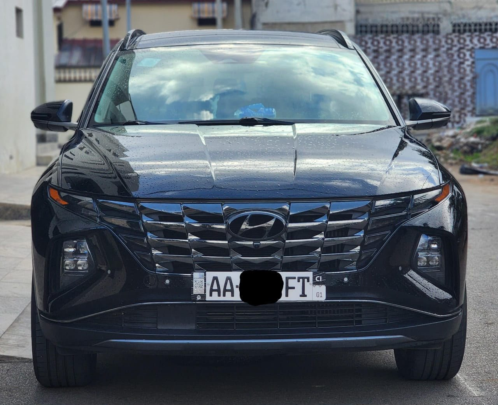

Nouvel arrivage
Hyundai Tucson Hybride 2024
2024 · Hybride essence · Automatique · 51 000 km
22 800 000 FCFA TTC
Année2024
MotorisationHybride essence
Moteur4 cylindres
BoîteAutomatique
Kilométrage annoncé51 000 km
Caméra360°
ÉclairageFeux LED
JantesAluminium sport
ClimatisationOui
ÉquipementsFull option
DouaneRAS, selon le vendeur
Full option et faible consommation annoncées par le vendeur. Caméra 360°, feux LED, jantes aluminium sport et climatisation. Situation douanière annoncée : RAS.
Disponibilité, kilométrage, équipements et documents à confirmer avec le propriétaire lors de la visite.